Capítulo 7 K-Nearest-Neighbor
KNN es un algoritmo de aprendizaje supervisado que podemos usar tanto para regresión como clasificación. Es un algoritmo fácil de interpretar y que permite ser flexible en el balance entre sesgo y varianza (dependiendo de los hiper-parámetros seleccionados).
El algoritmo de K vecinos más cercanos realiza comparaciones entre un nuevo elemento y las observaciones anteriores que ya cuentan con etiqueta. La esencia de este algoritmo está en etiquetar a un nuevo elemento de manera similar a como están etiquetados aquellos K elementos que más se le parecen. Veremos este proceso para cada uno de los posibles casos:
7.1 Clasificación
La idea detrás del algoritmo es sencilla, etiqueta una nueva observación en la categoría que tenga mas elementos de las k observaciones más cercanas, es decir:
Seleccionamos el hiper-parámetro K como el número elegido de vecinos.
Se calculará la similitud (distancia) de esta nueva observación a cada observación existente.
Ordenaremos estas distancias de menor a mayor.
Tomamos las K primeras entradas de la lista ordenada.
La nueva observación será asignada al grupo que tenga mayor número de observaciones en estas k primeras distancias (asignación por moda)
A continuación se ejemplifica este proceso:


Ejemplo:

Otro método que permite tener mayor control sobre las clasificaciones es asignar la probabilidad de pertenencia a cada clase de acuerdo con la proporción existente de cada una de las mismas. A partir de dichas probabilidades, el usuario puede determinar el punto de corte que sea más conveniente para el problema a resolver.
7.2 Regresión
En el caso de regresión, la etiqueta de una nueva observación se realiza a través del promedio del valor en las k observaciones más cercanas, es decir:
Seleccionamos el hiper-parámetro K como el número elegido de vecinos.
Se calculará la similitud (distancia) de esta nueva observación a cada observación existente
Ordenaremos estas distancias de menor a mayor
Tomamos las K primeras entradas de la lista ordenada.
La nueva observación será etiquetada mediante el promedio del valor de las observaciones en estas k primeras distancias.
Considerando un modelo de 3 vecinos más cercanos, las siguientes imágenes muestran el proceso de ajuste y predicción de nuevas observaciones.


Ejemplo de balance de sesgo y varianza
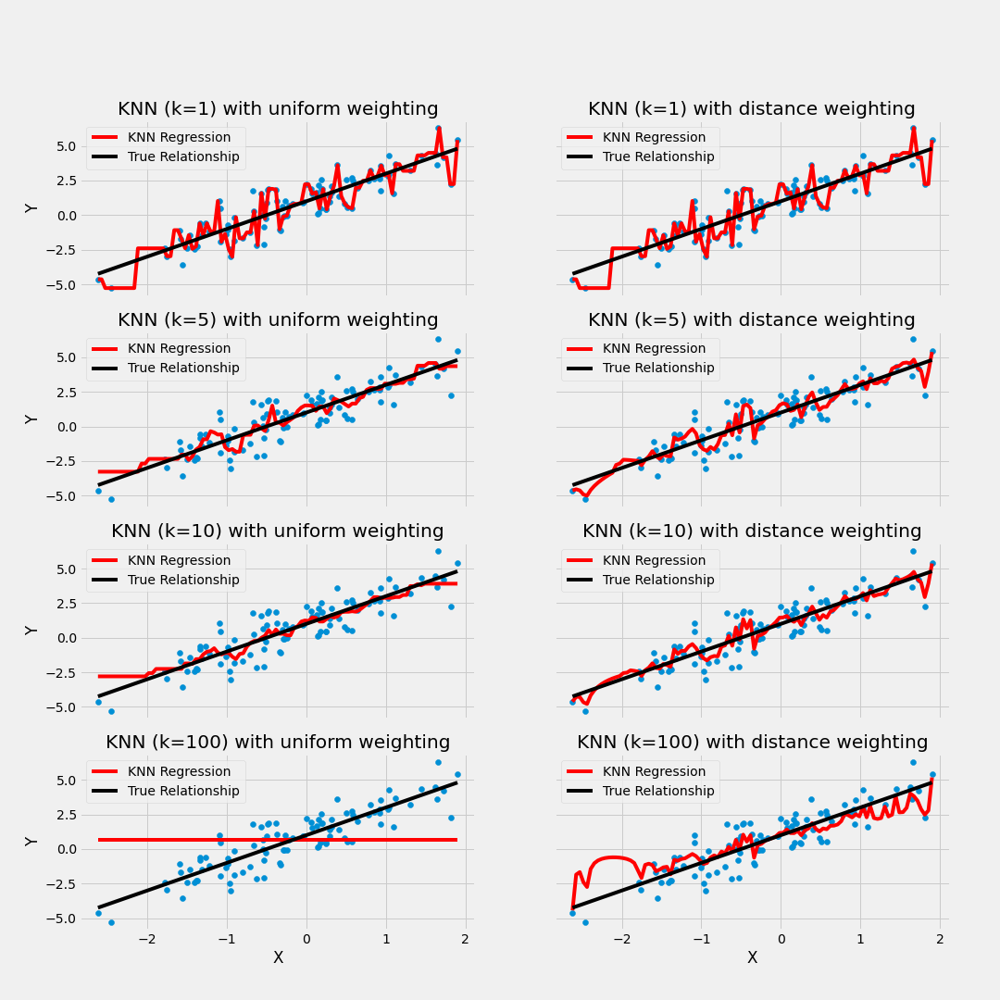
7.3 Ajuste del modelo
En contraste con otros algoritmos de aprendizaje supervisado, K-NN no genera un modelo del aprendizaje con datos de entrenamiento, sino que el aprendizaje sucede en el mismo momento en el que se prueban los datos de prueba. A este tipo de algoritmos se les llama lazy learning methods porque no aprende del conjunto de entrenamiento inmediatamente, sino que almacena el conjunto de datos y, en el momento de la clasificación, realiza una acción en el conjunto de datos.
El algoritmo KNN en la fase de entrenamiento simplemente almacena el conjunto de datos y cuando obtiene nuevos datos, clasifica esos datos en una categoría que es muy similar a los nuevos datos.
7.3.1 Selección de Hiper-parámetro K
Al configurar un modelo KNN, sólo hay algunos parámetros que deben elegirse/ajustarse para mejorar el rendimiento, uno de estos parámetros es el valor de la K.
No existe una forma particular de determinar el mejor valor para “K”, por lo que debemos probar algunos valores para encontrar “el mejor” de ellos.
Para los modelos de clasificación, especialmente si solo hay dos clases, generalmente se elige un número impar para k. Esto es para que el algoritmo nunca llegue a un “empate”
Una opción para seleccionar la K adecuada es ejecutar el algoritmo KNN varias veces con diferentes valores de K y elegimos la K que reduce la cantidad de errores mientras se mantiene la capacidad del algoritmo para hacer predicciones con precisión.
Observemos lo siguiente:

Estas gráficas se conoce como “gráfica de codo” y generalmente se usan para determinar el valor K.
A medida que disminuimos el valor de K a 1, nuestras predicciones se vuelven menos estables. Imaginemos que tomamos K = 1 y tenemos un punto de consulta rodeado por varios rojos y uno verde, pero el verde es el vecino más cercano. Razonablemente, pensaríamos que el punto de consulta es probablemente rojo, pero como K = 1, KNN predice incorrectamente que el punto de consulta es verde.
Inversamente, a medida que aumentamos el valor de K, nuestras predicciones se vuelven más estables debido a que tenemos más observaciones con quienes comparar, por lo tanto, es más probable que hagan predicciones más precisas. Eventualmente, comenzamos a presenciar un número creciente de errores, es en este punto que sabemos que hemos llevado el valor de K demasiado lejos.
7.3.2 Métodos de cálculo de la distancia entre observaciones
Otro parámetro que podemos ajustar para el modelo es la distancia usada, existen diferentes formas de medir qué tan “cerca” están dos puntos entre sí, y las diferencias entre estos métodos pueden volverse significativas en dimensiones superiores.
- La más utilizada es la distancia euclidiana, el tipo estándar de distancia.
\[d(X,Y) = \sqrt{\sum_{i=1}^{n} (x_i-y_i)^2}\]
- Otra métrica es la llamada distancia de Manhattan, que mide la distancia tomada en cada dirección cardinal, en lugar de a lo largo de la diagonal.
\[d(X,Y) = \sum_{i=1}^{n} |x_i - y_i|\]
- De manera más general, las anteriores son casos particulares de la distancia de Minkowski, cuya fórmula es:
\[d(X,Y) = (\sum_{i=1}^{n} |x_i-y_i|^p)^{\frac{1}{p}}\]
- La distancia de coseno es ampliamente en análisis de texto, sistemas de recomendación
\[d(X,Y)= 1 - \frac{\sum_{i=1}^{n}{X_iY_i}}{\sqrt{\sum_{i=1}^{n}{X_i^2}}\sqrt{\sum_{i=1}^{n}{Y_i^2}}}\]

7.4 Implementación en R
Usaremos las recetas antes implementadas para ajustar tanto el modelo de regresión como el de clasificación. Exploraremos un conjunto de hiperparámetros para elegir el mejor modelo.
Para determinar cuáles son los hiper-parámetros que funcionan mejor, es necesario realizar experimentos mediante ensayo-error hasta determinar la mejor solución. En cada partición del método de muestreo KFCV se implementan las distintas configuraciones y se calculan predicciones. Con las predicciones hechas en cada fold, se obtienen intervalos de confianza para conocer la variación asociada al modelo a través de los hiper-parámetros implementados.
Usaremos las recetas antes implementadas para ajustar tanto el modelo de regresión como el de clasificación. Exploraremos un conjunto de hiperparámetros para elegir el mejor modelo, sin embargo, para realizar este proceso de forma ágil, se inicializará un flujo de trabajo que se encargue de realizar todos los experimentos deseados y elegir el modelo adecuado. Los pasos a seguir, son los siguientes:
- Separación inicial de datos (test, train, KFCV).
- Pre-procesamiento e ingeniería de variables.
- Selección de tipo de modelo con hiperparámetros iniciales.
- Inicialización de workflow o pipeline.
- Creación de grid search.
- Entrenamiento de modelos con hiperparámetros definidos (salvar los modelos entrenados).
- Análisis de métricas de error e hiperparámetros (Vuelve al paso 3, si es necesario).
- Selección de modelo a usar.
- Ajuste de modelo final con todos los datos (Vuelve al paso 2, si es necesario).
- Validar poder predictivo con datos de prueba.
7.4.1 Regresión
Paso 1: Separación inicial de datos ( test, train
library(tidymodels)
data(ames)
set.seed(4595)
ames_split <- initial_split(ames, prop = 0.75)
ames_train <- training(ames_split)
ames_test <- testing(ames_split)
ames_folds <- vfold_cv(ames_train)Contando con datos de entrenamiento, procedemos a realizar el feature engineering para extraer las mejores características que permitirán realizar las estimaciones en el modelo.
Paso 2: Pre-procesamiento e ingeniería de variables
receta_casas <- recipe(
Sale_Price ~ Gr_Liv_Area + TotRms_AbvGrd + Exter_Cond + Bsmt_Cond +
Year_Sold + Year_Remod_Add,
data = ames_train) %>%
step_mutate(
Age_House = Year_Sold - Year_Remod_Add,
Exter_Cond = forcats::fct_collapse(Exter_Cond, Good = c("Typical", "Good", "Excellent"))) %>%
step_relevel(Exter_Cond, ref_level = "Good") %>%
step_normalize(all_numeric_predictors()) %>%
step_dummy(all_nominal_predictors()) %>%
step_interact(~ matches("Bsmt_Cond"):TotRms_AbvGrd) %>%
prep()
receta_casas## Recipe
##
## Inputs:
##
## role #variables
## outcome 1
## predictor 6
##
## Training data contained 2197 data points and no missing data.
##
## Operations:
##
## Variable mutation for ~Year_Sold - Year_Remod_Add, ~forcats::fct... [trained]
## Re-order factor level to ref_level for Exter_Cond [trained]
## Centering and scaling for Gr_Liv_Area, TotRms_AbvGrd, Year_Sold, Year_Rem... [trained]
## Dummy variables from Exter_Cond, Bsmt_Cond [trained]
## Interactions with (Bsmt_Cond_Fair + Bsmt_Cond_Good + Bsmt_Cond_No_Ba... [trained]Recordemos que la función recipe() solo son los pasos a seguir, necesitamos usar la función prep() que nos devuelve una receta actualizada con las estimaciones y la función juice() que nos devuelve la matriz de diseño.
Una vez que la receta de transformación de datos está lista, procedemos a implementar el pipeline del modelo de interés.
Paso 3: Selección de tipo de modelo con hiperparámetros iniciales
# install.packages("kknn")
knn_model <- nearest_neighbor(
mode = "regression",
neighbors = tune("K"),
weight_func = tune()) %>%
set_engine("kknn")Paso 4: Inicialización de workflow o pipeline
knn_workflow <- workflow() %>%
add_recipe(receta_casas) %>%
add_model(knn_model)Paso 5: Creación de grid search
knn_parameters_set <- extract_parameter_set_dials(knn_workflow) %>%
update(
K = dials::neighbors(c(10,80)),
weight_func = weight_func(values = c("rectangular", "triangular", "inv", "gaussian", "cos"))
)
set.seed(123)
knn_grid <- knn_parameters_set %>%
grid_max_entropy(size = 50)
ctrl_grid <- control_grid(save_pred = T, verbose = T)Paso 6: Entrenamiento de modelos con hiperparámetros definidos
library(doParallel)
UseCores <- detectCores() - 1
cluster <- makeCluster(UseCores)
registerDoParallel(cluster)
knnt1 <- Sys.time()
knn_tune_result <- tune_grid(
knn_workflow,
resamples = ames_folds,
grid = knn_grid,
metrics = metric_set(rmse, mae, mape, rsq),
control = ctrl_grid
)
knnt2 <- Sys.time(); knnt2 - knnt1
stopCluster(cluster)
knn_tune_result %>% saveRDS("models/knn_model_reg.rds")Podemos obtener las métricas de cada fold con el siguiente código:
knn_tune_result <- readRDS("models/knn_model_reg.rds")Paso 7: Análisis de métricas de error e hiperparámetros (Vuelve al paso 3, si es necesario)
collect_metrics(knn_tune_result)## # A tibble: 196 × 8
## K weight_func .metric .estimator mean n std_err .config
## <int> <chr> <chr> <chr> <dbl> <int> <dbl> <chr>
## 1 11 cos mae standard 31367. 10 642. Preprocessor1…
## 2 11 cos mape standard 18.7 10 0.439 Preprocessor1…
## 3 11 cos rmse standard 46086. 10 1104. Preprocessor1…
## 4 11 cos rsq standard 0.669 10 0.0151 Preprocessor1…
## 5 30 cos mae standard 31355. 10 649. Preprocessor1…
## 6 30 cos mape standard 18.8 10 0.427 Preprocessor1…
## 7 30 cos rmse standard 46534. 10 1242. Preprocessor1…
## 8 30 cos rsq standard 0.665 10 0.0134 Preprocessor1…
## 9 38 cos mae standard 31528. 10 673. Preprocessor1…
## 10 38 cos mape standard 18.9 10 0.427 Preprocessor1…
## # ℹ 186 more rowsEn la siguiente gráfica observamos las distintas métricas de error asociados a los hiperparámetros elegidos:
knn_tune_result %>% autoplot()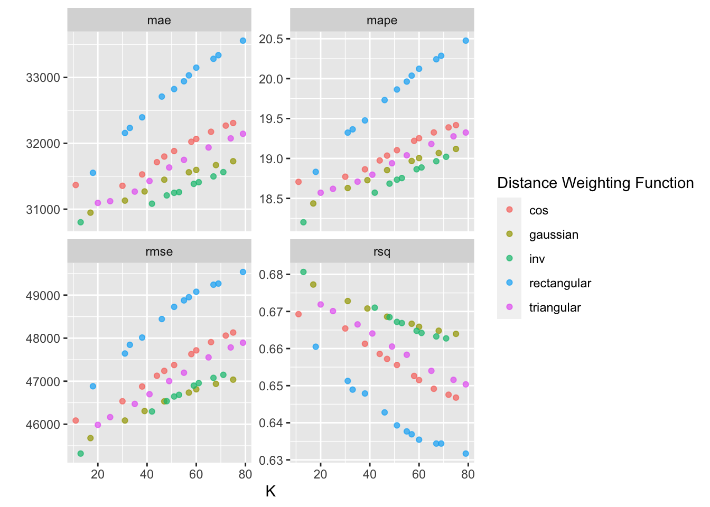
En la siguiente gráfica observamos el error cuadrático medio de las distintas métricas con distintos números de vecinos.
En los argumentos de la función, se puede seleccionar el kernel, esto es las opciones posibles para ponderar el promedio respecto a la distancia seleccionada. “Rectangular” (que es knn estándar no ponderado), “triangular”, “cos”, “inv”, “gaussiano”, “rango” y “óptimo”.
Para conocer más a cerca de las distintas métricas de distancia pueden consultar: Measures y KNN function
knn_tune_result %>%
autoplot(metric = "rmse")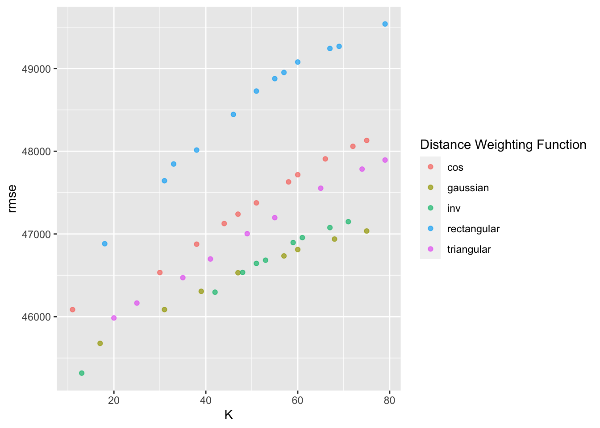
En la siguiente gráfica observamos el error absoluto promedio de las distintas métricas con distintos números de vecinos.
knn_tune_result %>%
autoplot(metric = "mae")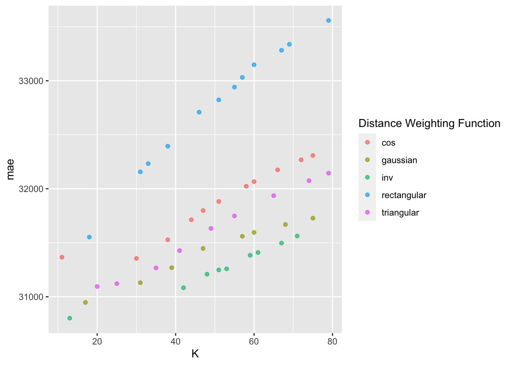
Paso 8: Selección de modelo a usar
Con el siguiente código obtenemos los mejores 10 modelos respecto al rmse.
show_best(knn_tune_result, n = 10, metric = "rmse")## # A tibble: 10 × 8
## K weight_func .metric .estimator mean n std_err .config
## <int> <chr> <chr> <chr> <dbl> <int> <dbl> <chr>
## 1 13 inv rmse standard 45318. 10 1070. Preprocessor1_Mode…
## 2 17 gaussian rmse standard 45678. 10 1234. Preprocessor1_Mode…
## 3 20 triangular rmse standard 45985. 10 1124. Preprocessor1_Mode…
## 4 11 cos rmse standard 46086. 10 1104. Preprocessor1_Mode…
## 5 31 gaussian rmse standard 46086. 10 1340. Preprocessor1_Mode…
## 6 25 triangular rmse standard 46165. 10 1163. Preprocessor1_Mode…
## 7 42 inv rmse standard 46296. 10 1420. Preprocessor1_Mode…
## 8 39 gaussian rmse standard 46307. 10 1386. Preprocessor1_Mode…
## 9 35 triangular rmse standard 46472. 10 1258. Preprocessor1_Mode…
## 10 47 gaussian rmse standard 46531. 10 1404. Preprocessor1_Mode…knn_tune_result %>% show_best(n = 10, metric = "mape")## # A tibble: 10 × 8
## K weight_func .metric .estimator mean n std_err .config
## <int> <chr> <chr> <chr> <dbl> <int> <dbl> <chr>
## 1 13 inv mape standard 18.2 10 0.339 Preprocessor1_Model…
## 2 17 gaussian mape standard 18.4 10 0.379 Preprocessor1_Model…
## 3 20 triangular mape standard 18.6 10 0.428 Preprocessor1_Model…
## 4 42 inv mape standard 18.6 10 0.419 Preprocessor1_Model…
## 5 25 triangular mape standard 18.6 10 0.431 Preprocessor1_Model…
## 6 31 gaussian mape standard 18.6 10 0.395 Preprocessor1_Model…
## 7 48 inv mape standard 18.7 10 0.410 Preprocessor1_Model…
## 8 11 cos mape standard 18.7 10 0.439 Preprocessor1_Model…
## 9 35 triangular mape standard 18.7 10 0.421 Preprocessor1_Model…
## 10 39 gaussian mape standard 18.7 10 0.408 Preprocessor1_Model…Ahora obtendremos el modelo que mejor desempeño tiene tomando en cuenta el rmse y haremos las predicciones del conjunto de prueba con este modelo.
best_knn_model_reg <- knn_tune_result %>% select_best(metric = "rmse")
best_knn_model_reg## # A tibble: 1 × 3
## K weight_func .config
## <int> <chr> <chr>
## 1 13 inv Preprocessor1_Model20knn_regression_best_1se_model <- knn_tune_result %>%
select_by_one_std_err(metric = "mape", "mape")
knn_regression_best_1se_model## # A tibble: 1 × 10
## K weight_func .metric .estimator mean n std_err .config .best .bound
## <int> <chr> <chr> <chr> <dbl> <int> <dbl> <chr> <dbl> <dbl>
## 1 17 gaussian mape standard 18.4 10 0.379 Preproc… 18.2 18.5Paso 9: Ajuste de modelo final con todos los datos (Vuelve al paso 2, si es necesario)
final_knn_model_reg <- knn_workflow %>%
finalize_workflow(best_knn_model_reg) %>%
parsnip::fit(data = ames_train)Este último objeto es el modelo final entrenado, el cual contiene toda la información del pre-procesamiento de datos, por lo que en caso de ponerse en producción el modelo, sólo se necesita de este último elemento para poder realizar nuevas predicciones.
Antes de pasar al siguiente paso, es importante validar que hayamos hecho un uso correcto de las variables predictivas. En este momento es posible detectar variables que no estén aportando valor o variables que no debiéramos estar usando debido a que cometeríamos data leakage. Para enfrentar esto, ayuda estimar y ordenar el valor de importancia de cada variable en el modelo.
# install.packages("kernlab")
library(vip)
ames_importance <- final_knn_model_reg %>%
extract_fit_parsnip() %>%
vi(
method = "permute",
nsim = 30,
target = "Sale_Price",
metric = "rmse",
pred_wrapper = kernlab::predict,
train = juice(receta_casas)
)
ames_importance %>% saveRDS("models/vip_ames_knn.rds")ames_importance <- readRDS("models/vip_ames_knn.rds")
ames_importance## # A tibble: 17 × 3
## Variable Importance StDev
## <chr> <dbl> <dbl>
## 1 Gr_Liv_Area 70988. 951.
## 2 Year_Remod_Add 45452. 778.
## 3 Age_House 45334. 912.
## 4 Bsmt_Cond_Typical_x_TotRms_AbvGrd 39802. 392.
## 5 TotRms_AbvGrd 39382. 557.
## 6 Year_Sold 37657. 795.
## 7 Bsmt_Cond_Typical 17401. 863.
## 8 Bsmt_Cond_No_Basement 15895. 1750.
## 9 Bsmt_Cond_Good_x_TotRms_AbvGrd 15087. 722.
## 10 Bsmt_Cond_Fair 13961. 1478.
## 11 Exter_Cond_Fair 13681. 1726.
## 12 Bsmt_Cond_Good 13494. 917.
## 13 Bsmt_Cond_Fair_x_TotRms_AbvGrd 9742. 1372.
## 14 Bsmt_Cond_No_Basement_x_TotRms_AbvGrd 8821. 1676.
## 15 Exter_Cond_Poor 2828. 1090.
## 16 Bsmt_Cond_Poor_x_TotRms_AbvGrd 1424. 346.
## 17 Bsmt_Cond_Poor 1215. 364.ames_importance %>%
mutate(Variable = forcats::fct_reorder(Variable, Importance)) %>%
slice_max(Importance, n = 20) %>%
ggplot(aes(Importance, Variable, color = Variable)) +
geom_errorbar(aes(xmin = Importance - StDev, xmax = Importance + StDev),
alpha = 0.5, size = 1) +
geom_point(size = 2) +
theme(legend.position = "none") +
ggtitle("Variable Importance Measure")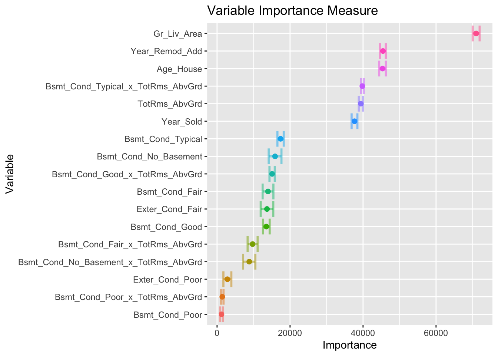
Paso 10: Validar poder predictivo con datos de prueba
Imaginemos por un momento que pasa un mes de tiempo desde que hicimos nuestro modelo, es hora de ponerlo a prueba prediciendo valores de nuevos elementos:
results_reg <- predict(final_knn_model_reg, ames_test) %>%
dplyr::bind_cols(Sale_Price = ames_test$Sale_Price, .) %>%
dplyr::rename(pred_knn_reg = .pred)
results_reg## # A tibble: 733 × 2
## Sale_Price pred_knn_reg
## <int> <dbl>
## 1 105000 117872.
## 2 185000 183378.
## 3 180400 184216.
## 4 141000 92359.
## 5 210000 222663.
## 6 216000 201289.
## 7 149900 170697.
## 8 105500 151156.
## 9 88000 151156.
## 10 146000 166595.
## # ℹ 723 more rowsMétricas de desempeño
Ahora para calcular las métricas de desempeño usaremos la paquetería MLmetrics. Es posible definir nuestro propio conjunto de métricas que deseamos reportar creando el objeto metric_set:
library(MLmetrics)
multi_metric <- metric_set(mae, mape, rmse, rsq, ccc)
multi_metric(results_reg, truth = Sale_Price, estimate = pred_knn_reg) %>%
mutate(.estimate = round(.estimate, 2)) %>%
select(-.estimator)## # A tibble: 5 × 2
## .metric .estimate
## <chr> <dbl>
## 1 mae 31870.
## 2 mape 18.6
## 3 rmse 48366.
## 4 rsq 0.64
## 5 ccc 0.78results_reg %>%
ggplot(aes(x = pred_knn_reg, y = Sale_Price)) +
geom_point() +
geom_abline(color = "red") +
xlab("Prediction") +
ylab("Observation") +
ggtitle("Comparisson")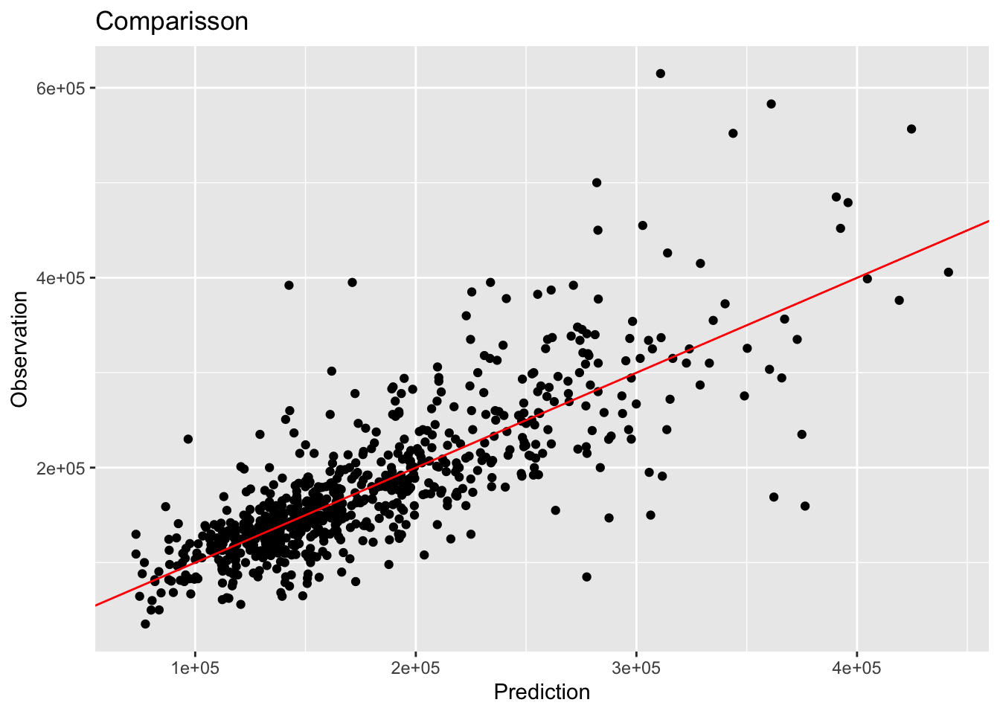
7.4.2 Clasificación
Es turno de revisar la implementación de SVM con nuestro bien conocido problema de predicción de cancelación de servicios de telecomunicaciones. Los datos se encuentran disponibles en el siguiente enlace:
Los pasos para implementar en R este modelo predictivo son los mismos, cambiando únicamente las especificaciones del tipo de modelo, pre-procesamiento e hiper-parámetros.
library(readr)
library(tidyverse)
library(tidymodels)
tidymodels_prefer()
telco <- read_csv("data/Churn.csv")
glimpse(telco)## Rows: 7,043
## Columns: 21
## $ customerID <chr> "7590-VHVEG", "5575-GNVDE", "3668-QPYBK", "7795-CFOCW…
## $ gender <chr> "Female", "Male", "Male", "Male", "Female", "Female",…
## $ SeniorCitizen <dbl> 0, 0, 0, 0, 0, 0, 0, 0, 0, 0, 0, 0, 0, 0, 0, 0, 0, 0,…
## $ Partner <chr> "Yes", "No", "No", "No", "No", "No", "No", "No", "Yes…
## $ Dependents <chr> "No", "No", "No", "No", "No", "No", "Yes", "No", "No"…
## $ tenure <dbl> 1, 34, 2, 45, 2, 8, 22, 10, 28, 62, 13, 16, 58, 49, 2…
## $ PhoneService <chr> "No", "Yes", "Yes", "No", "Yes", "Yes", "Yes", "No", …
## $ MultipleLines <chr> "No phone service", "No", "No", "No phone service", "…
## $ InternetService <chr> "DSL", "DSL", "DSL", "DSL", "Fiber optic", "Fiber opt…
## $ OnlineSecurity <chr> "No", "Yes", "Yes", "Yes", "No", "No", "No", "Yes", "…
## $ OnlineBackup <chr> "Yes", "No", "Yes", "No", "No", "No", "Yes", "No", "N…
## $ DeviceProtection <chr> "No", "Yes", "No", "Yes", "No", "Yes", "No", "No", "Y…
## $ TechSupport <chr> "No", "No", "No", "Yes", "No", "No", "No", "No", "Yes…
## $ StreamingTV <chr> "No", "No", "No", "No", "No", "Yes", "Yes", "No", "Ye…
## $ StreamingMovies <chr> "No", "No", "No", "No", "No", "Yes", "No", "No", "Yes…
## $ Contract <chr> "Month-to-month", "One year", "Month-to-month", "One …
## $ PaperlessBilling <chr> "Yes", "No", "Yes", "No", "Yes", "Yes", "Yes", "No", …
## $ PaymentMethod <chr> "Electronic check", "Mailed check", "Mailed check", "…
## $ MonthlyCharges <dbl> 29.85, 56.95, 53.85, 42.30, 70.70, 99.65, 89.10, 29.7…
## $ TotalCharges <dbl> 29.85, 1889.50, 108.15, 1840.75, 151.65, 820.50, 1949…
## $ Churn <chr> "No", "No", "Yes", "No", "Yes", "Yes", "No", "No", "Y…Paso 1: Separación inicial de datos ( test, train
set.seed(1234)
telco_split <- initial_split(telco, prop = .70)
telco_train <- training(telco_split)
telco_test <- testing(telco_split)
telco_folds <- vfold_cv(telco_train)
telco_folds## # 10-fold cross-validation
## # A tibble: 10 × 2
## splits id
## <list> <chr>
## 1 <split [4437/493]> Fold01
## 2 <split [4437/493]> Fold02
## 3 <split [4437/493]> Fold03
## 4 <split [4437/493]> Fold04
## 5 <split [4437/493]> Fold05
## 6 <split [4437/493]> Fold06
## 7 <split [4437/493]> Fold07
## 8 <split [4437/493]> Fold08
## 9 <split [4437/493]> Fold09
## 10 <split [4437/493]> Fold10Paso 2: Pre-procesamiento e ingeniería de variables
telco_rec <- recipe(
Churn ~ customerID + TotalCharges + MonthlyCharges + SeniorCitizen + Contract,
data = telco_train) %>%
update_role(customerID, new_role = "id variable") %>%
step_mutate(Contract = as.factor(Contract)) %>%
step_impute_median(all_numeric_predictors()) %>%
step_normalize(all_numeric_predictors()) %>%
step_dummy(all_nominal_predictors()) %>%
prep()
telco_rec## Recipe
##
## Inputs:
##
## role #variables
## id variable 1
## outcome 1
## predictor 4
##
## Training data contained 4930 data points and 10 incomplete rows.
##
## Operations:
##
## Variable mutation for ~as.factor(Contract) [trained]
## Median imputation for TotalCharges, MonthlyCharges, SeniorCitizen [trained]
## Centering and scaling for TotalCharges, MonthlyCharges, SeniorCitizen [trained]
## Dummy variables from Contract [trained]Paso 3: Selección de tipo de modelo con hiperparámetros iniciales
knn_model <- nearest_neighbor(
mode = "classification",
neighbors = tune("K"),
weight_func = tune()) %>%
set_engine("kknn")
knn_model## K-Nearest Neighbor Model Specification (classification)
##
## Main Arguments:
## neighbors = tune("K")
## weight_func = tune()
##
## Computational engine: kknnPaso 4: Inicialización de workflow o pipeline
knn_workflow <- workflow() %>%
add_recipe(telco_rec) %>%
add_model(knn_model)
knn_workflow## ══ Workflow ════════════════════════════════════════════════════════════════════════════
## Preprocessor: Recipe
## Model: nearest_neighbor()
##
## ── Preprocessor ────────────────────────────────────────────────────────────────────────
## 4 Recipe Steps
##
## • step_mutate()
## • step_impute_median()
## • step_normalize()
## • step_dummy()
##
## ── Model ───────────────────────────────────────────────────────────────────────────────
## K-Nearest Neighbor Model Specification (classification)
##
## Main Arguments:
## neighbors = tune("K")
## weight_func = tune()
##
## Computational engine: kknnPaso 5: Creación de grid search
knn_parameters_set <- extract_parameter_set_dials(knn_workflow) %>%
update(K = dials::neighbors(c(10,80)),
weight_func = weight_func(values = c("rectangular", "inv", "gaussian", "cos"))
)
set.seed(123)
knn_grid <- knn_parameters_set %>%
grid_max_entropy(size = 50)
ctrl_grid <- control_grid(save_pred = T, verbose = T)Paso 6: Entrenamiento de modelos con hiperparámetros definidos
library(doParallel)
UseCores <- detectCores() - 1
cluster <- makeCluster(UseCores)
registerDoParallel(cluster)
knnt1 <- Sys.time()
knn_tune_result <- tune_grid(
knn_workflow,
resamples = telco_folds,
grid = knn_grid,
metrics = metric_set(roc_auc, pr_auc),
control = ctrl_grid
)
knnt2 <- Sys.time(); knnt2 - knnt1
stopCluster(cluster)
knn_tune_result %>% saveRDS("models/knn_model_cla.rds")knn_tune_result <- readRDS("models/knn_model_cla.rds")Paso 7: Análisis de métricas de error e hiperparámetros (Vuelve al paso 3, si es necesario)
collect_metrics(knn_tune_result)## # A tibble: 96 × 8
## K weight_func .metric .estimator mean n std_err .config
## <int> <chr> <chr> <chr> <dbl> <int> <dbl> <chr>
## 1 16 cos pr_auc binary 0.923 10 0.00238 Preprocessor1_Model…
## 2 16 cos roc_auc binary 0.814 10 0.00481 Preprocessor1_Model…
## 3 23 cos pr_auc binary 0.926 10 0.00234 Preprocessor1_Model…
## 4 23 cos roc_auc binary 0.822 10 0.00465 Preprocessor1_Model…
## 5 32 cos pr_auc binary 0.928 10 0.00218 Preprocessor1_Model…
## 6 32 cos roc_auc binary 0.827 10 0.00456 Preprocessor1_Model…
## 7 40 cos pr_auc binary 0.930 10 0.00214 Preprocessor1_Model…
## 8 40 cos roc_auc binary 0.829 10 0.00438 Preprocessor1_Model…
## 9 43 cos pr_auc binary 0.930 10 0.00219 Preprocessor1_Model…
## 10 43 cos roc_auc binary 0.830 10 0.00448 Preprocessor1_Model…
## # ℹ 86 more rowsEn la siguiente gráfica observamos las distintas métricas de error asociados a los hiperparámetros elegidos.
autoplot(knn_tune_result, metric = "pr_auc")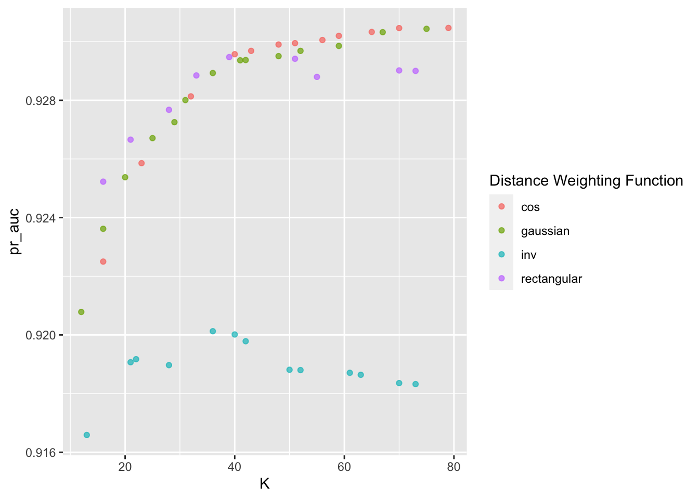
autoplot(knn_tune_result, metric = "roc_auc")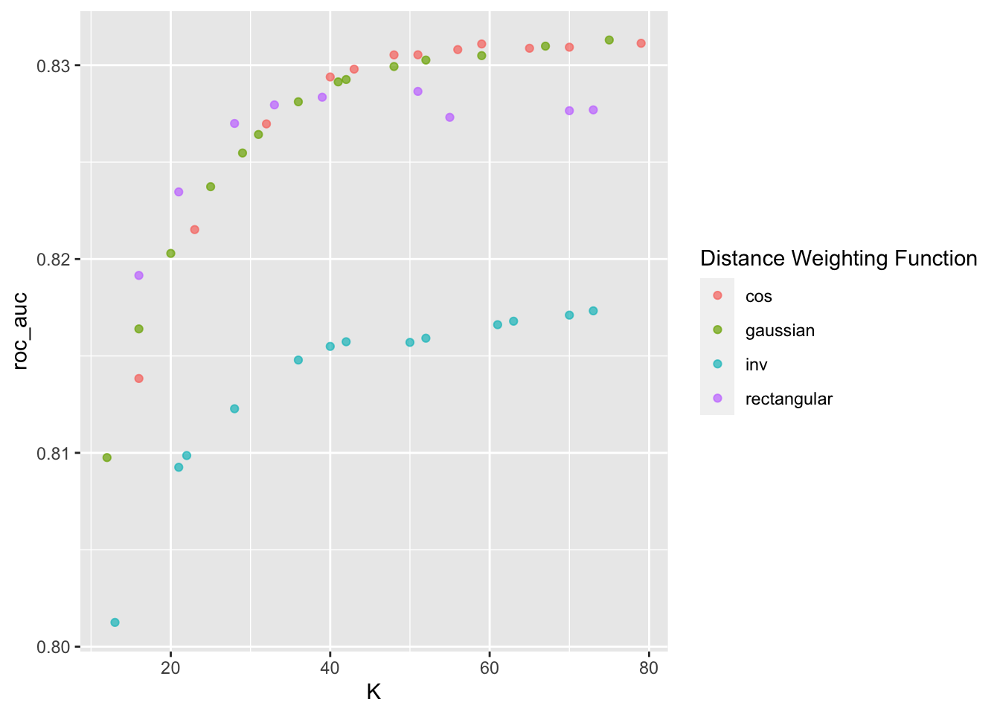
show_best(knn_tune_result, n = 10, metric = "pr_auc")## # A tibble: 10 × 8
## K weight_func .metric .estimator mean n std_err .config
## <int> <chr> <chr> <chr> <dbl> <int> <dbl> <chr>
## 1 79 cos pr_auc binary 0.930 10 0.00227 Preprocessor1_Model…
## 2 70 cos pr_auc binary 0.930 10 0.00221 Preprocessor1_Model…
## 3 75 gaussian pr_auc binary 0.930 10 0.00219 Preprocessor1_Model…
## 4 65 cos pr_auc binary 0.930 10 0.00220 Preprocessor1_Model…
## 5 67 gaussian pr_auc binary 0.930 10 0.00216 Preprocessor1_Model…
## 6 59 cos pr_auc binary 0.930 10 0.00224 Preprocessor1_Model…
## 7 56 cos pr_auc binary 0.930 10 0.00223 Preprocessor1_Model…
## 8 51 cos pr_auc binary 0.930 10 0.00219 Preprocessor1_Model…
## 9 48 cos pr_auc binary 0.930 10 0.00217 Preprocessor1_Model…
## 10 59 gaussian pr_auc binary 0.930 10 0.00223 Preprocessor1_Model…Paso 8: Selección de modelo a usar
best_knn_model_cla <- select_best(knn_tune_result, metric = "pr_auc")
best_knn_model_cla## # A tibble: 1 × 3
## K weight_func .config
## <int> <chr> <chr>
## 1 79 cos Preprocessor1_Model12knn_classification_best_1se_model <- knn_tune_result %>%
select_by_one_std_err(metric = "roc_auc", "roc_auc")
knn_classification_best_1se_model## # A tibble: 1 × 10
## K weight_func .metric .estimator mean n std_err .config .best .bound
## <int> <chr> <chr> <chr> <dbl> <int> <dbl> <chr> <dbl> <dbl>
## 1 32 cos roc_auc binary 0.827 10 0.00456 Preproc… 0.831 0.827Paso 9: Ajuste de modelo final con todos los datos (Vuelve al paso 2, si es necesario)
final_knn_model_cla <- knn_workflow %>%
finalize_workflow(best_knn_model_cla) %>%
parsnip::fit(data = telco_train)Este último objeto es el modelo final entrenado, el cual contiene toda la información del pre-procesamiento de datos, por lo que en caso de ponerse en producción el modelo, sólo se necesita de este último elemento para poder realizar nuevas predicciones.
Antes de pasar al siguiente paso, es importante validar que hayamos hecho un uso correcto de las variables predictivas. En este momento es posible detectar variables que no estén aportando valor o variables que no debiéramos estar usando debido a que cometeríamos data leakage. Para enfrentar esto, ayuda estimar y ordenar el valor de importancia del modelo.
churn_importance <- final_knn_model_cla %>%
extract_fit_parsnip() %>%
vi(
method = "permute",
nsim = 30,
target = "Churn",
metric = "auc",
reference_class = "Yes",
pred_wrapper = kernlab::predict,
train = juice(telco_rec)
)
churn_importance %>% saveRDS("models/vip_telco_knn.rds")churn_importance <- readRDS("models/vip_telco_knn.rds")
churn_importance## # A tibble: 5 × 3
## Variable Importance StDev
## <chr> <dbl> <dbl>
## 1 TotalCharges 0.0847 0.00685
## 2 MonthlyCharges 0.0820 0.00595
## 3 Contract_Two.year 0.0507 0.00353
## 4 Contract_One.year 0.0468 0.00389
## 5 SeniorCitizen 0.0232 0.00329churn_importance %>%
mutate(Variable = forcats::fct_reorder(Variable, Importance)) %>%
ggplot(aes(Importance, Variable, color = Variable)) +
geom_errorbar(aes(xmin = Importance - StDev, xmax = Importance + StDev),
alpha = 0.5, size = 1) +
geom_point(size = 2) +
theme(legend.position = "none") +
ggtitle("Variable Importance Measure")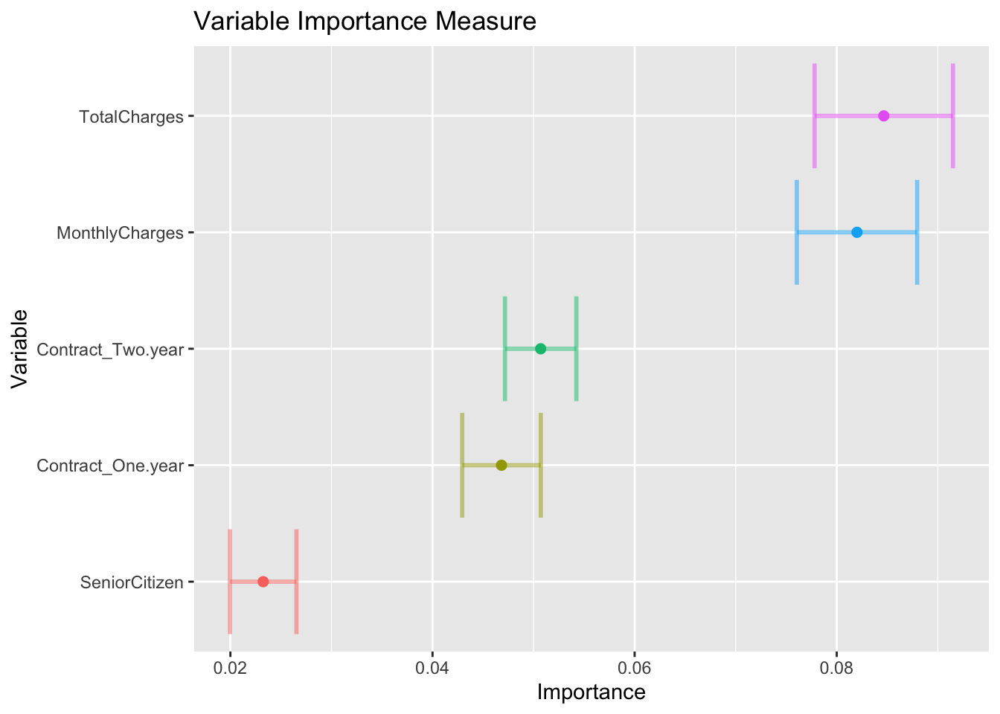
Paso 10: Validar poder predictivo con datos de prueba
Imaginemos por un momento que pasa un mes de tiempo desde que hicimos nuestro modelo, es hora de ponerlo a prueba prediciendo valores de nuevos elementos:
results_cla <- predict(final_knn_model_cla, telco_test, type = 'prob') %>%
dplyr::bind_cols(Churn = telco_test$Churn, .) %>%
mutate(Churn = factor(Churn, levels = c('Yes', 'No'), labels = c('Yes', 'No')))
results_cla## # A tibble: 2,113 × 3
## Churn .pred_No .pred_Yes
## <fct> <dbl> <dbl>
## 1 No 0.959 0.0414
## 2 Yes 0.268 0.732
## 3 No 0.724 0.276
## 4 No 1 0
## 5 No 0.883 0.117
## 6 No 0.515 0.485
## 7 No 0.994 0.00557
## 8 No 0.835 0.165
## 9 Yes 0.642 0.358
## 10 No 0.987 0.0126
## # ℹ 2,103 more rowsbind_rows(
roc_auc(results_cla, truth = Churn, estimate = .pred_Yes),
pr_auc(results_cla, truth = Churn, estimate = .pred_Yes)
)## # A tibble: 2 × 3
## .metric .estimator .estimate
## <chr> <chr> <dbl>
## 1 roc_auc binary 0.834
## 2 pr_auc binary 0.629pr_curve_data <- pr_curve(
results_cla,
truth = Churn,
estimate = .pred_Yes
)
pr_curve_data## # A tibble: 1,890 × 3
## .threshold recall precision
## <dbl> <dbl> <dbl>
## 1 Inf 0 1
## 2 0.850 0.00177 1
## 3 0.848 0.00353 0.667
## 4 0.845 0.00530 0.75
## 5 0.843 0.00883 0.833
## 6 0.840 0.0106 0.857
## 7 0.838 0.0141 0.889
## 8 0.838 0.0159 0.9
## 9 0.835 0.0177 0.909
## 10 0.835 0.0194 0.917
## # ℹ 1,880 more rowsroc_curve_data <- roc_curve(
results_cla,
truth = Churn,
estimate = .pred_Yes
)
roc_curve_data## # A tibble: 1,891 × 3
## .threshold specificity sensitivity
## <dbl> <dbl> <dbl>
## 1 -Inf 0 1
## 2 0 0 1
## 3 0.0000199 0.123 0.993
## 4 0.0000704 0.124 0.993
## 5 0.000167 0.125 0.993
## 6 0.000288 0.125 0.993
## 7 0.000599 0.126 0.993
## 8 0.000921 0.127 0.993
## 9 0.00118 0.127 0.993
## 10 0.00126 0.128 0.993
## # ℹ 1,881 more rowspr_curve_plot <- pr_curve_data %>%
ggplot(aes(x = recall, y = precision)) +
geom_abline(slope = -1, intercept = 1) +
geom_path(size = 1, colour = 'lightblue') +
ylim(0, 1) +
coord_equal() +
ggtitle("Precision vs Recall")+
theme_minimal()
pr_curve_plot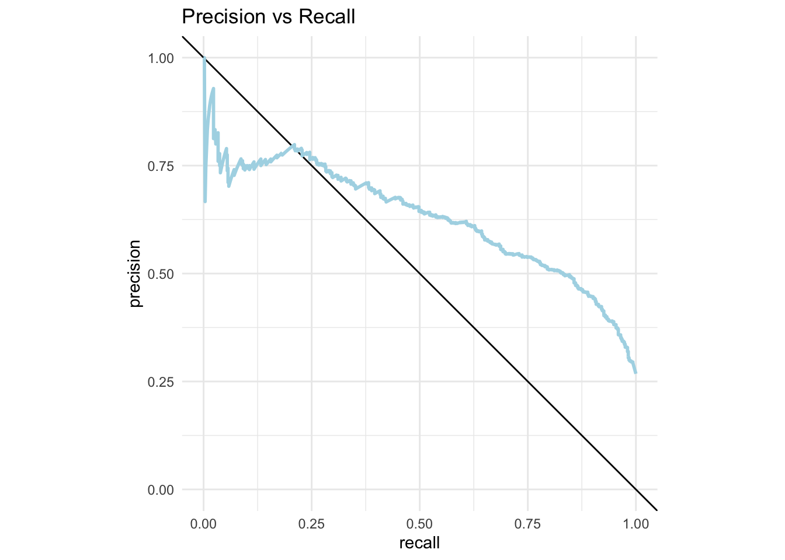
roc_curve_plot <- roc_curve_data %>%
ggplot(aes(x = 1 - specificity, y = sensitivity)) +
geom_path(size = 1, colour = 'lightblue') +
geom_abline() +
coord_equal() +
ggtitle("ROC Curve")+
theme_minimal()
roc_curve_plot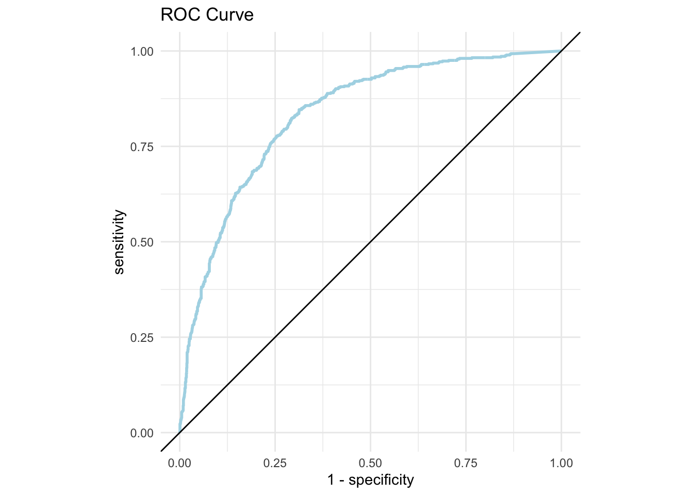
Pueden usar la app de shiny que nos permite jugar con el threshold de clasificación para tomar la mejor decisión.